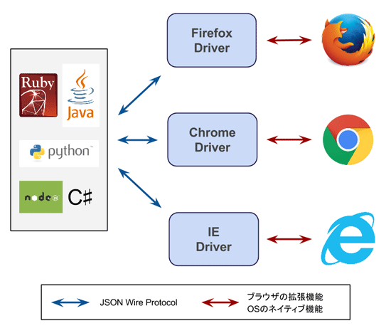

WRAP-TestSuite（開発者向け）
WRAP-TestSuiteとは
ブラウザのオートメーションツールであるSelenium、CIツールのJenkinsをベースとした、E2Eテスト及び、リグレッションテストを実施するための環境を提供します。
できること
ブラウザを操作するためのテストコードを作成することで、ブラウザを使ったUIのテストを自動化することができます。
CIツールのJenkinsと連動し、様々なタイミングでのテストの実行や、外部との連携が可能です。

更新履歴
| 版 |
更新日 |
変更内容 |
| 1.0.0 |
2017/5/1 |
新規作成 |